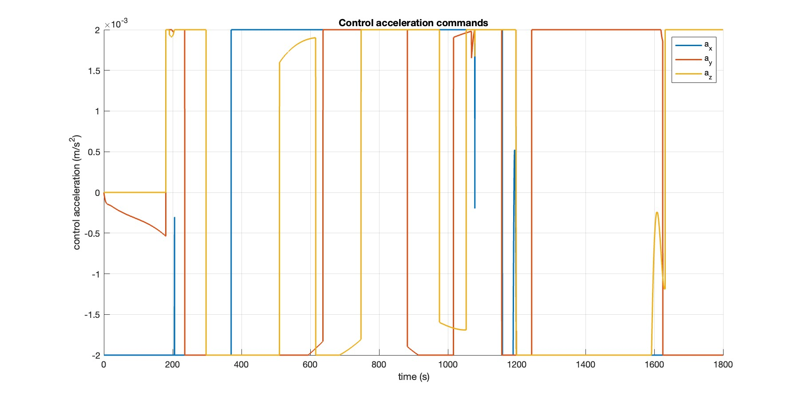
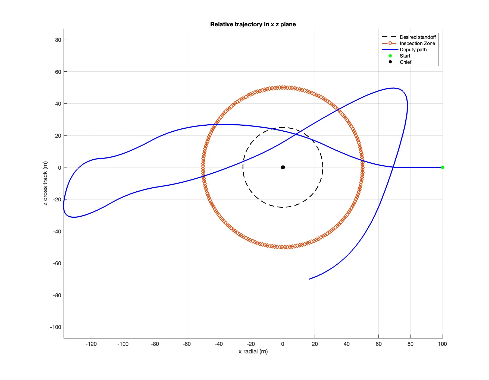
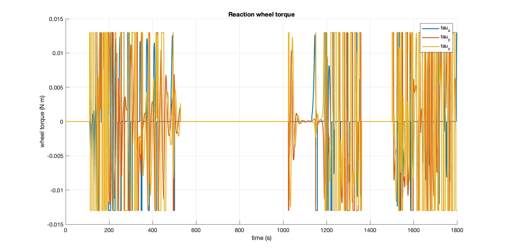
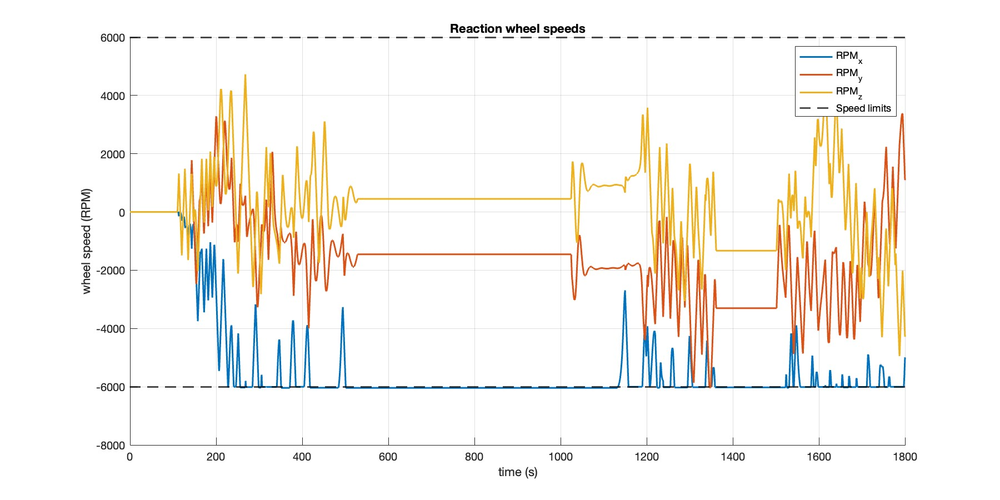

This project is a full 6-degree-of-freedom relative orbital proximity operations (RPO) and autonomous inspection simulation in MATLAB. It combines Clohessy-Wiltshire translational dynamics with quaternion-based attitude control using reaction wheels, LQR guidance for approach and fly-around, PD attitude pointing toward the chief satellite, and reaction wheel desaturation logic. The deputy performs a controlled approach from 180 m, enters a 25 m standoff inspection trajectory, and maintains line-of-sight pointing throughout.
What I Worked On
Implemented full 6DOF coupled translation + attitude dynamics with RK4 integration
Designed LQR-based translational guidance with feedforward CW terms and range band constraints
Developed quaternion PD attitude controller with reaction wheel torque allocation and unloading
Created smooth inspection reference trajectory
Modeled reaction wheel saturation, torque limits, and speed constraints
Implemented line-of-sight (LOS) checking and body-X pointing toward chief spacecraft
What I Learned
How to couple translational and attitude dynamics in a realistic 6DOF simulation
Practical challenges of reaction wheel momentum management and saturation
Designing smooth, feasible reference trajectories for inspection missions
Tuning LQR and PD gains for robust performance under actuator limits
Importance of proper quaternion normalization and shortest-path error logic
Real-world considerations in autonomous RPO: LOS constraints, hardware selection, and control blending
3D Inspection Trajectory with LOS Cone Visualization

Control acceleration commands (a_x, a_y, a_z)

Relative trajectory in x-z plane (Deputy path with inspection zone)

Reaction wheel torque profiles

Reaction wheel speeds (RPM) with saturation limits